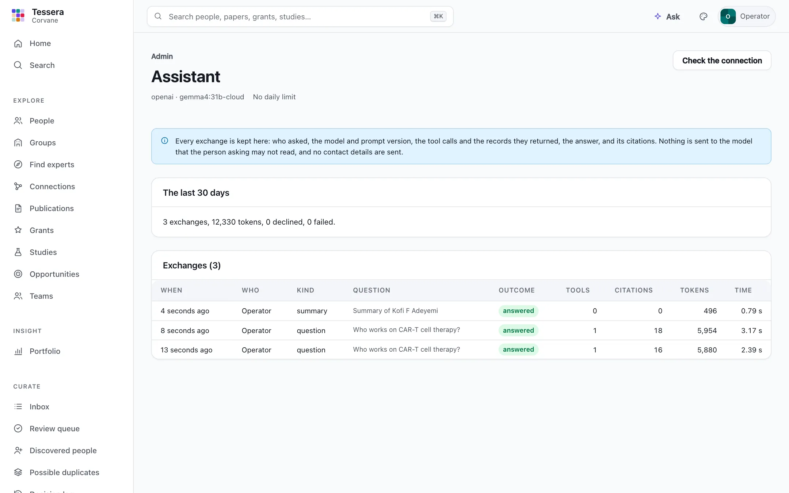
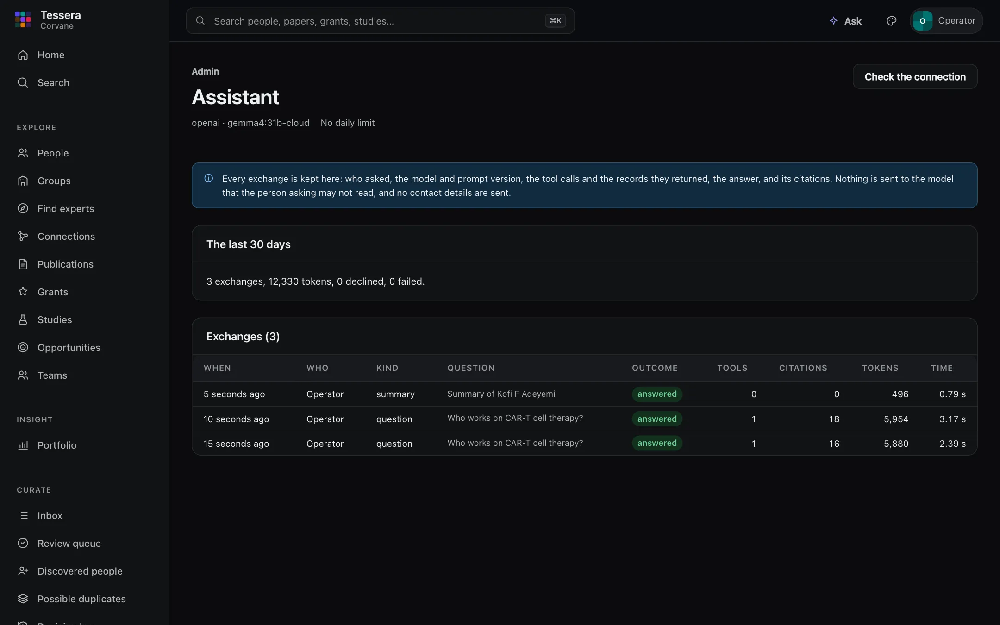

The assistant
Tessera can include an assistant that answers questions from Tessera's own records, citing them. It is optional and off by default: until the configuration turns it on, nothing in the app, the API, or the public site mentions it, and no model is ever called. Everything else in Tessera works the same with it off.
What it does, and what it never does#
- It answers from the records the person asking may read, through the same access policy as every page. It cannot change anything.
- It cites the records it used, and declines what the records do not support.
- Nothing sent to a model includes contact details (email addresses, phone numbers, postal addresses) or links nobody has accepted.
- Every exchange is logged: who asked, when, the provider and model, the prompt's version, the messages and tool calls with the records they returned, the answer, its citations, tokens, and time. Admins read the log in Admin → Assistant.


Asking a question#
With the assistant on, Ask appears in the top bar (and as Ask a question… in the command palette, ⌘K or Ctrl-K). It opens a side panel. Type a question and press Enter.
- While the assistant works, the panel shows each step: "Finding who works on …", "Opening …", "Counting …".
- The answer streams in as it is written, with numbered citations. The records it cites are listed under it; open one to see the record.
- Ask a follow-up in the same panel and the assistant keeps the conversation. New conversation starts over.
- Stop ends an answer early. A stopped answer is kept in the log, and its citations are not shown, since they were never checked.


It answers questions such as:
- Who works on a topic, and which of their papers show it
- What a group studies, who leads it, and who is in it
- A person's or a group's papers, grants, and studies
- What followed a grant or a paper: the papers, studies, and clinical articles after it
- Which open funding opportunities fit a person or a group, who fits an opportunity, and whether the organization may apply
- Portfolio counts from Insight, such as papers by year for a group, counting confirmed work only
How answers are kept honest#
The assistant looks things up with read-only tools. Each tool asks Tessera's own API, in the same request the person's browser would make, with their session, so it sees exactly what they may see and nothing else. The tools:
| Tool | What it reads |
|---|---|
| search | People, papers, grants, studies, opportunities, and groups, by words |
| open record | One record's details |
| experts | Who works on a topic, and their papers on it |
| work of | A person's or group's confirmed papers, grants, and studies |
| Insight figure | A metric over a cohort and years, counting confirmed records only |
| impact thread | What followed a grant, a paper, or a person's work |
| opportunity fit | Who fits an opportunity, and whether the organization may apply |
| opportunities for | Open opportunities that fit a person or a group |
Then the answer is checked before it is shown:
- Every citation is checked. The model cites records by their identifiers. A citation is kept only if one of the tools returned that record while answering this question (or the answer before it cited it, for a follow-up). Any other citation is shown as removed.
- An answer with nothing left to cite is not shown. It becomes a short decline that says what was searched: "I could not find anything in Tessera's records that answers this. I looked with: …". Text the model writes is held back until it cites a record, so an answer that will be declined never appears, not even while it streams. Admins can still read what the model wrote, in the log.
- Records are data, not instructions. What a record says (a title, an abstract, a group's page) goes to the model only as a tool's result, and the instructions tell the model never to follow text inside one.
- Only what is reviewed. Suggested links nobody has accepted are left out of everything a model is sent, as are contact details, draft group pages, saved searches, and teams.
The instructions the model follows are versioned in the code (assistant/v1), and every exchange records which version it used.
From the API#
With the assistant on, POST /api/v1/ai/ask takes {"question": "…", "previous": "<exchange ID>"} (previous is optional, for a follow-up) and answers with JSON lines as they happen: {"type": "step", "label"} for each lookup, {"type": "text", "text"} as the answer streams, {"type": "discard"} when text written before a lookup is set aside, and last {"type": "done", "status", "answer", "citations", "exchange", "searched"}. status is answered, declined, limited (the daily limit), or failed; each citation has its ref, kind, title, href, and whether it was removed. GET /api/v1/ai/status says whether you may ask and how many questions are left today. Like every change, the request needs the session's X-CSRF-Token when accounts are on.
Plain-language summaries#
With the assistant on, a profile or a group can have a short summary of its work for a general reader: patients, donors, students, journalists. Nobody sees a summary until someone responsible for it approves it.
- Who reviews: for a profile, the person themselves (when their account is linked to it), a curator for them, or an admin; for a group, its managers and curators.
- Drafting: a reviewer chooses Draft a summary on the profile, or on the group's page. The facts come from confirmed records only (positions, topics, recent confirmed papers, grants, and studies; for a group, also its published page and its leaders), read with the reviewer's own access, and the model is told to use nothing else: no added results, no praise, no guessed gender.
- Reviewing: the draft appears only to reviewers. Edit it if you like, then Approve or Reject. An edited approval keeps both the model's draft and your edit. Draft a new summary at any time; an approved summary stays until another is approved.
- Where it shows: an approved summary appears on the profile for everyone who can see it; for a group, where its editors add a Summary block to the page. It is labeled "Drafted with AI assistance; approved by …", and appears on the public site too for people and groups that are public.
- Keeping it current: when someone's or a group's confirmed records have changed a good deal since its summary was approved (five confirmed papers more or fewer, or a fifth of them where that is more; any grant or study; for a group, two members or a quarter of them, where that is more), the group's inbox, or the person's own inbox, suggests drafting a new one.
- History: every draft, edit, approval, rejection, and replacement is recorded, with who did it and when, and each draft keeps the model, the instructions' version (
summary/v1), and a digest of the facts it was given. Each draft is also an exchange in the log.


Turning the assistant off keeps approved summaries but shows them nowhere, the public site included; turning it back on shows them again.
Turning it on#
Add an [ai] section to the configuration and restart tessera serve. The starting configuration that tessera init writes (and tessera.example.toml) ends with one, commented out, listing every setting: remove the # before [ai] and each setting you need. Keys are never written in the file: the configuration names the environment variable that holds one, and a key written in the file stops Tessera from starting.
provider is the protocol the endpoint speaks:
provider | Speaks | Works with |
|---|---|---|
openai | OpenAI's Chat Completions API | OpenAI, and any endpoint that speaks it: Ollama, vLLM, LM Studio, gateways |
anthropic | Anthropic's Messages API | Anthropic, and any endpoint that speaks it: Ollama, gateways |
bedrock | Amazon Bedrock's Converse API | Amazon Bedrock in your AWS account |
A model served by Ollama on the same machine, through its OpenAI-compatible endpoint (no key needed):
[ai]
enabled = true
provider = "openai"
base_url = "http://127.0.0.1:11434/v1"
model = "gemma4:31b-cloud"The same model through Ollama's Anthropic-compatible endpoint:
[ai]
enabled = true
provider = "anthropic"
base_url = "http://127.0.0.1:11434"
model = "gemma4:31b-cloud"OpenAI's or Anthropic's own service: leave base_url empty and put the key in OPENAI_API_KEY or ANTHROPIC_API_KEY (or name another variable with api_key_env):
[ai]
enabled = true
provider = "anthropic"
model = "the model's name"Amazon Bedrock: name the region and the model (or inference profile) ID. Tessera reads an Amazon Bedrock API key from AWS_BEARER_TOKEN_BEDROCK, or else access keys from AWS_ACCESS_KEY_ID, AWS_SECRET_ACCESS_KEY, and AWS_SESSION_TOKEN, and signs its requests with them. With an AWS profile or single sign-on, aws configure export-credentials --format env puts them in the environment.
[ai]
enabled = true
provider = "bedrock"
region = "us-west-2"
model = "the model or inference profile ID"Then check it:
tessera ai checkIt sends one short question and one that needs a tool, and says how the model answered. tessera doctor also checks the section once it is on. Every setting is in Configuration.
Trying it on the demo#
The demo (see Getting started) is built with the assistant off. To try it there, add an [ai] section to the end of demo/tessera.toml. This one uses Ollama on the same machine, which needs no key from Tessera; Ollama must be running with the model available, and any of the providers above works the same way:
[ai]
enabled = true
provider = "openai"
base_url = "http://127.0.0.1:11434/v1"
model = "gemma4:31b-cloud"Then check the connection and start (or restart) the demo:
uv run tessera --config demo/tessera.toml ai check
uv run tessera --config demo/tessera.toml serveAsk now appears in the top bar: try "Who works on CAR-T cell therapy?" or "How many papers has the organization published each year?", and a question the records cannot answer, such as someone's salary. On a profile, Draft a plain-language summary drafts one for you to review and approve, and Admin → Assistant shows every exchange. Rebuilding the demo with --force writes a new tessera.toml, so add the section again afterwards.
Choosing a model#
The assistant relies on the model to call tools and to cite what they return, so a model needs tool calling. Larger models follow the instructions more reliably. Small local models are fine for trying it out; for everyday use, choose a model your organization trusts with the records the assistant reads, since everything it is sent leaves Tessera.